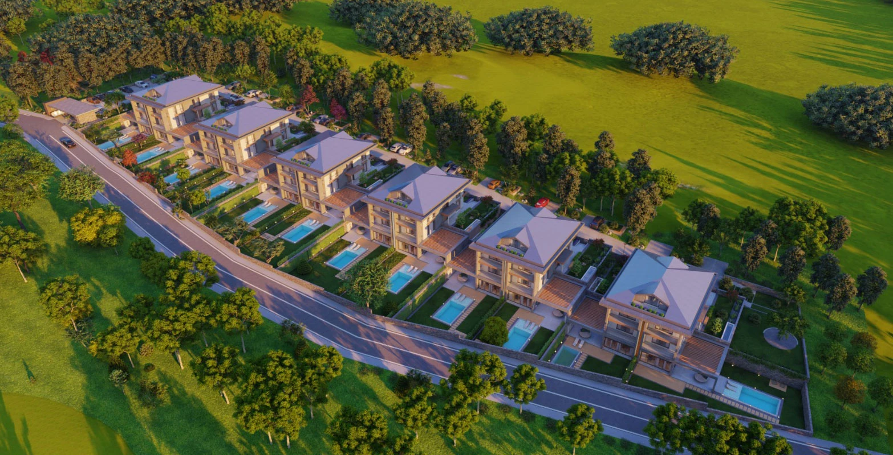

Elite Garden Çekmeköy
A villa development in Çekmeköy with spacious interiors, garden areas and terraces. The project presentation pairs contemporary architecture with a green setting and private outdoor living spaces.
Photo gallery

Official architectural illustrations; these images do not show the current construction condition.
Living spaces
The published villa specification includes a private lift, underfloor heating, smart-home controls, two balconies, terraces and winter-garden spaces. The exterior illustrations show pools and landscaped gardens.
Çekmeköy · Istanbul
Çekmeköy, on Istanbul’s Asian side. Arrange a visit to compare the chosen villa’s garden, outlook and local access.
Choose your home
Request the current apartment selection, price and payment options. Compare the exact unit, view and included services before arranging your purchase.